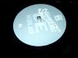
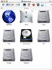
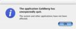

./verture.net/blog/
[ wednesday, may 22 ]Panel evaluation
Spent two hours yesterday together with 3 fellow students, evaluating the technical staff at the
institute.
The institute is in the process of pinpointing problems and building
competences within its structures, an incredibly healthy initiative now
going on the second year I believe.
Mercuri Urval is undertaking the task, and you can read more about the competence building project at the Institute of Geography in
Magisterbladet.
We recommended centralising information for the students at one place,
and preferably the website, which wouldn't suffer from a facelift while
they were at. Otherwise we were pretty satisfied with them.
< # | : 0 >
Mmmmm, nice to
see that the tight suit still fits Carrie-Anne Moss like a glove. Too bad it doesn't screen until 2003.
< # | : 6 >
This is probably old news to a whole lot of people, but I'll post it
anyway, since Episode II is showing in theatres everywhere now. Here
goes:
At the command-line prompt of a computer connected to the vast sea of information [www], type the following:
telnet towel.blinkenlights.nl-- press enter and enjoy the show.
For the ones without command-line access, visit
this page.
< # | : 2 >
This
article at The Register really proves how naive, and clueless the music
industry is regarding the consequences of digital media. One successful
rip of a CD using electrical tape to dodge the copy protection bit of
the CD, and it can be made instantly available to hundreds of thousands
of users via p2p software. If, on top of that, mac users risk their
computer going tits up because they wanted to play the CD on the
machine, and for perfectly legal reasons, then it's no wonder they
resort to sucking down a p2p client and scour the web for the music
instead.
At
datanoms diy festival earlier this year,
Brennan Young
had a better idea. Instead of not buying the copy protected CD's and
waiting for The Successful Rip to show up somewhere near you, you ought
to buy the CD's, and preferably several of them and in different shops.
If the protected CD can't be played on a certain player, the record
shop has to exchange the protected CD, wtih a regular version of the
CD, and if they can't do that, you can demand to get your money back.
This way you inflict the largest amount of extra expenses for the
record company: a) The protected CD that you originally bought can't be
sold again, and has to go back to the factory for recycling, b) you get
a ripable copy, that you [if you are a bad person] share via p2p-
software, instantly defeating the very purpose of the protected version
of the CD, c) extra transport costs for the company, transporting both
protected and regular CD's back and forth between shops, distribution
companies, and factories.
In the distance, the sound of bullets penetrating feets could be heard.
< # | : 1 >
The discless jockey
I had my debut as a DJ this sunday at Camillas birthday party. My setup was a mix of MiniDiscs [dubbed minidics among
Papi
and myself after spotting a typo on a website somewhere], and CD's. It
wasn't banging, but it was loud enough for the 5-0's to drop by and ask
us to turn down the volume, or close the windows. We did
both.
< # | : 2 >
While googling for the ethymology of the word 'wazoo', I ended up at the
pseudodictionary. Go check it out, it's quite
bucephalus, and you can submit your own too.
< # | : 1 >
The "On
iTunes" to the left or right of you [depending on which layout you've chosen in the Steelomatic] is a spiffy lil' thing made by
Adriaan Tijsseling, author of the illustrious
OS X tips site, and now also maker of
iTunes Trackinfo.
Everytime I am online and listening to music, iTunes Trackinfo will
display what track I am hearing, and update it every three minutes.
Luverly! Should have documented this when I implemented the feature
after seeing it at
Beatnikpad
last week - you know, to give proper respect where it is due, but hey,
I am a lazy twat. Unfortunately, it doesn't generate valid XHTML
markup, and I don't have the insight to do the necessary backwards
engineering to make it do so.
< # | : 4 >
The brand new slice of wax from
Malk De Koijn,
the most original Danish rap band ever, is rotating on my turntable.
The CD has been out for about a month, but being the vinyl junkie that
I am, I've been waiting for the LP to hit the shops, and that happened
today. Saturday they play live at a sold out
Vega,
and I can hardly wait. At their last show, which was also sold out,
Geolo-G [one third of the group] sported a Superman cape and wielding
nicotine patches on his nipples[!].
< # | : 0 >
[ tuesday, may 07 ]From the kitchen
Bread dipped in a cop of coffe
really isn't that tasty.
< # | : 1 >
I finally did it, I switched to
OS X
two weeks ago, and I am delighted. It is utter eye candy, and although
the Finder gets on my tits most of the time, the new ways of
controlling the beast [via the terminal] and the preemptive
multitasking makes up for its shortcomings.
The
fact that applications can crash and leave the rest of the system
untouched is 'fantamazing'. Luckily, Apple will be releasing a much
better build of the Finder with the Jaguar release later this year [supporting spring loaded folders -- yay!].
To my pleasant surprise apple took the liberty of installing the
Apache webserver with the system, so all I had to do to get
php
up and running locally, was to whip up the terminal, write 'sudo pico
/etc/httpd/httpd.conf' comment out the needed modules and AddTypes,
exit pico, write 'sudo apachectl graceful' and b-i-n-g-o,
php was enabled.
< # | : 4 >
[ tuesday, april 23 ]Increased literacy competency
Obviously,
they need to check up on their spelling instead [hint: the page title].
< # | : 1 >